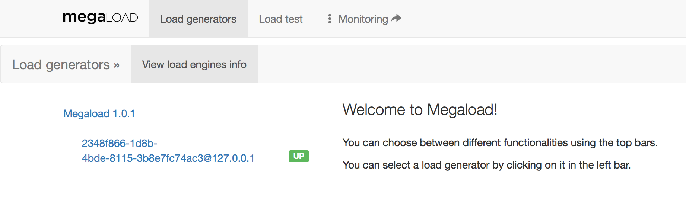

Getting to know the Megaload UI
To access Megaload browser-based user interface, go to http://<EC2_Instance_Public_DNS>:8080/megaload/index.html.
Megaload has two dashboards, one for managing and running load tests, and one for monitoring and viewing metrics. To switch between them, click the menu item on the right:
 Load testing
Load testing
 |
|
|
Monitoring
|
|
Load testing dashboard
The primary navigation bar provides three main menus, Load generators, Load test, and Property-based testing.
Load generators
The Load generators page shows the Megaload instances that have been deployed. In the following example there is one Megaload generator, Megaload 1.0.1, which consists of one load engine (Megaload node).

Load test
The Load test page provides all the functionality required to upload and run tests.
- Upload test cases: Upload test specifications and any additional data. Additional data might be a CSV file that contains usernames and passwords to connect to a specific HTTP server.
- Edit test cases: A JSON test editor that does basic syntactic checks to help you write test specifications.
- Escript test: Upload Escript test specifications.
- Runner: Start and stop tests.
- Load report: A summary of the test being executed. There are six sections: Status, Assertions, Assertion details, Response time, Rate, and Statistics.
Monitoring
To leave the load testing dashboard and go to the monitoring dashboard, click Monitoring on the right.
Monitoring dashboard
Overview page
When you open Monitoring you see an overview page, which you can customise by adding panels that show metrics, histograms, alarms, or node statistics. See link.
Metrics
You can view aggregated metrics for the load generator, or metrics for each individual load engine.
- Collected metrics: View counters and system usage for the load generator, and counters and histograms for each of the load engines.
- Live metrics: View counters and system usage in real time.
Notifications
View log entries from the different load engines. The logs are provided by two different components: error_logger and lager. You can filter by application, search in logs, and change the log level for individual load engines.
Notifications are useful for troubleshooting purposes, but do not provide information about sucessful load tests.
Load testing
To leave the monitoring dashboard and go to the load testing dashboard, click Load testing on the right.